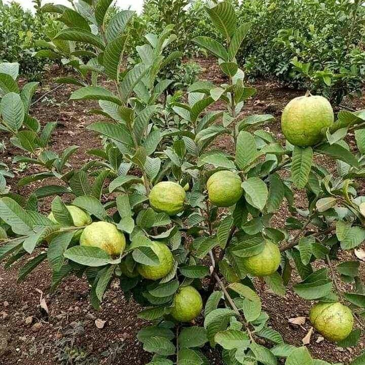
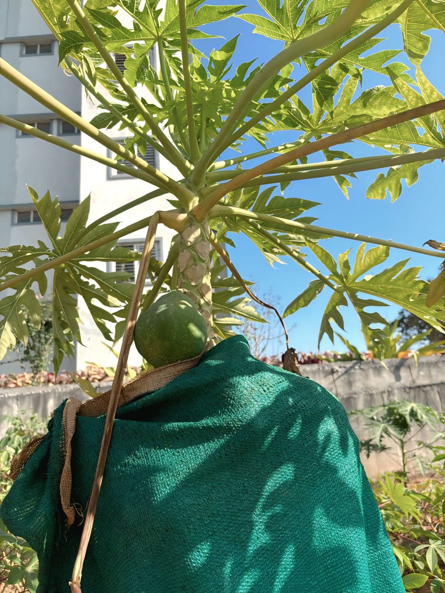

Guava
Scientific Name: Psidium guajava
A tropical evergreen tree bearing round or pear-shaped fruits with edible seeds and smooth, light-green or yellow skin. The aromatic flesh—which ranges from white to deep pink—is exceptionally high in vitamin C and dietary fiber.

Sweet Lime (Mosambi)
Scientific Name: Citrus limetta
A popular, low-acid citrus fruit known for its sweet, mildly tangy juice. It is widely consumed in tropical regions and is highly favored for its refreshing properties, hydration benefits, and high vitamin C content.

Papaya
Scientific Name: Carica papaya
A fast-growing tropical tree that produces large, fleshy fruits with sweet, vibrant orange-colored flesh. The fruit features a central cavity filled with edible black seeds and is an excellent source of vitamin C, papain (an enzyme that aids digestion), and antioxidants.